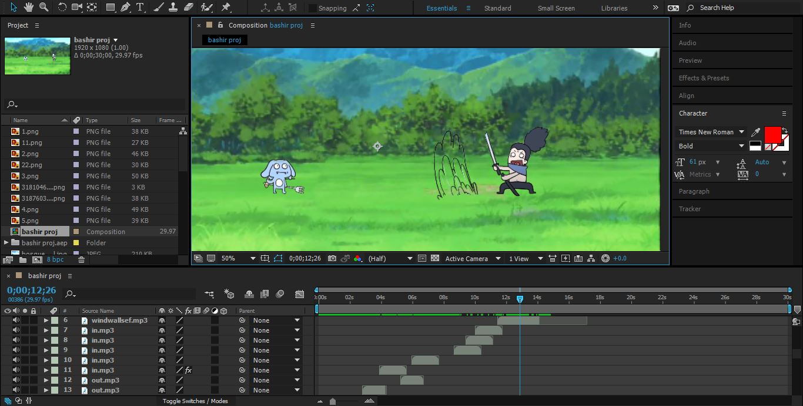

Project
"Hello everyone, brace yourselves for an intense showdown in my Adobe After Effects project! Witness as Yassuo valiantly tries to defend himself against Fizz's relentless assault, but ultimately falls victim to Fizz's devastating one-shot attack. This visually stunning animation features dynamic animations, breathtaking visual effects, and an immersive sound design that amplifies the excitement of the battle. Don't miss this epic moment as Fizz proves his prowess by taking down Yassuo in a thrilling duel!"

here is my project and i am sorry about the LOGO in it :)